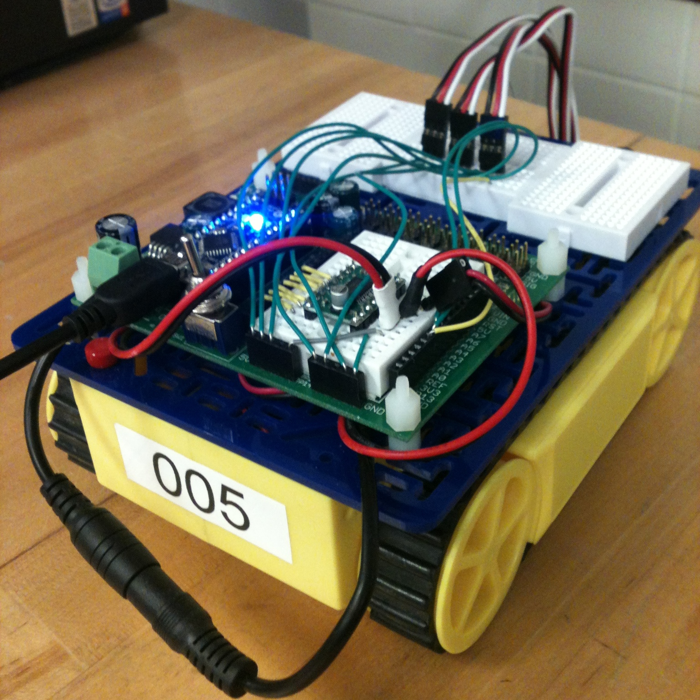
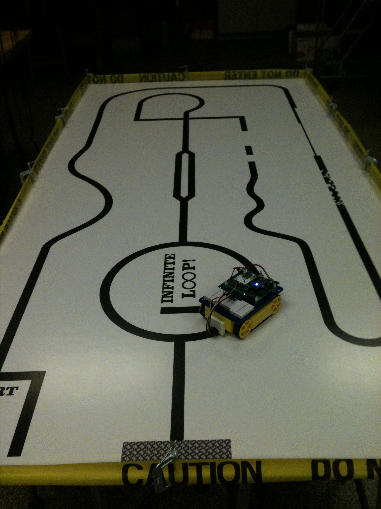

CONNIE LIU
LINE FOLLOWING ROBOT
An autonomous robot with attitude
Our final project for 2.678, MIT's Electronics for Mechanical Systems class, was to build a line following robot that could autonomously navigate a maze. We were given an Arduino, an infrared sensor array, and a robot frame to start. The maze consisted of a 1 inch wide black line extending through the course. However, there were obstacles throughout such as loops, garbled lines, blank spots, and more. Success was judged by speed, accuracy, and ability to get through the whole track.
My partner and I were able to complete the course in 1:37, ranking in the top scoring robots. However, in future iterations of the robot, I would have included a more efficient search algorithm that utilized path prediction rather than the 180 scan used for this version.
Lessons Learned
Arduino Programming: I utilized delay functions, interrupt pins, and serial commands to program the Arduino for this robot. I also tuned the sensor value thresholds to control for noise in the data and to make the software more robust. The speed was also tuned to complete tight turns quickly and accurately.
Electronics Debugging: In order to debug our circuit, we used a multimeter to measure current, voltage, and continuity across different leads. Through this exercise, I developed an appreciation for using multimeters in clever ways to identify the source of any problems with electronics. In addition, we designed test circuits to send smoothed signals to the robot using an external power supply and a waveform generator.